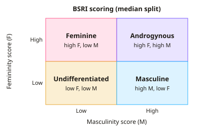

A-level Psychology Year 13 · Topic 4
Gender
This topic explains how we develop a sense of our gender, and why gender roles differ between people and cultures.
We will cover sex and gender, androgyny, chromosomes and hormones, and atypical sex chromosome patterns.
Then we compare cognitive, psychodynamic and social learning explanations, the role of culture and media, and explanations of gender dysphoria.
- 8 subtopics
- 240 questions
- Free: 4.1 notes and 10 questions
In this topic
- 4.1Sex and gender, sex-role stereotypes and androgyny (Bem Sex Role Inventory)Free below · 30 questions
- 4.2Role of chromosomes and hormones in sex and gender (testosterone, oestrogen, oxytocin)Open in Full Marks · 36 questions
- 4.3Atypical sex chromosome patterns: Klinefelter's and Turner's syndromesOpen in Full Marks · 29 questions
- 4.4Cognitive explanations: Kohlberg's theory and gender schema theoryOpen in Full Marks · 26 questions
- 4.5Freud's psychodynamic explanation of gender developmentOpen in Full Marks · 29 questions
- 4.6Social learning theory and gender developmentOpen in Full Marks · 26 questions
- 4.7Influence of culture and media on gender rolesOpen in Full Marks · 30 questions
- 4.8Gender dysphoria: biological and social explanationsOpen in Full Marks · 34 questions
4.1 · Free notes
Sex and gender, sex-role stereotypes and androgyny (Bem Sex Role Inventory)

Key points
- Sex refers to the biological characteristics of being male or female (chromosomes, hormones, gonads and genitals), whereas gender refers to the psychological, social and cultural traits associated with being male or female.
- Sex-role stereotypes are widely held, over-simplified beliefs about the behaviours and traits considered appropriate for males and females, e.g. males as independent and assertive, females as nurturing and emotional.
- Broverman et al. (1972) found that clinicians described a healthy adult (sex unspecified) in similar terms to a healthy adult male, but not a healthy adult female, which shows the gender bias built into stereotypes.
- Androgyny is a balance of masculine and feminine characteristics within one person, regardless of biological sex. Bem argued that androgynous people are more psychologically healthy and flexible, as they can adapt behaviour to the situation.
- Bem (1974) developed the Bem Sex Role Inventory (BSRI), a self-report measure of 60 personality characteristics: 20 masculine, 20 feminine and 20 neutral filler items.
- Participants rate how true each characteristic is of themselves on a 7-point scale (1 = never or almost never true, 7 = always or almost always true). The neutral items act as fillers and give a check on social desirability.
- Masculinity and femininity are scored separately. Using a median split, high on both = androgynous, high masculine/low feminine = masculine, high feminine/low masculine = feminine, low on both = undifferentiated.
- Strength: the BSRI treats masculinity and femininity as independent dimensions, not opposite ends of one scale, so androgyny can be measured. It was developed systematically and has been widely used.
- Limitation: the BSRI was created in the 1970s with US students, so it may be dated and culturally biased. The traits (e.g. 'yielding', 'ambitious') may not reflect current or cross-cultural views of masculine and feminine.
- Limitation: self-report data can be affected by social desirability bias. Also, some research suggests that high masculinity, rather than androgyny, is most strongly linked to well-being, which challenges Bem's claim.
- Evaluation: the concept of androgyny helps to challenge gender stereotypes and the idea that mental health depends on conforming to them. However, labelling 'undifferentiated' individuals may be too simplistic.
In more detail
- Worked BSRI scoring: masculinity 5.6 and femininity 5.4, both above the median → androgynous; 5.6 and 3.2 → masculine; 3.0 and 3.1 → undifferentiated.
- Example items: masculine: 'self-reliant', 'assertive', 'willing to take risks'; feminine: 'affectionate', 'gentle', 'sensitive to the needs of others'; neutral: 'truthful', 'friendly'.
- Reliability: Bem found BSRI scores were very consistent when students retook it about four weeks later, with test–retest correlations of around 0.9.
- Exam tip: don't mix up sex (biological) and gender (psychological and social). A question about androgyny is about gender, not sex.
Practice
Sex and gender, sex-role stereotypes and androgyny (Bem Sex Role Inventory): 10 questions
Pick an answer to check it, or open the answer for the explanation.
1. Which statement best distinguishes gender from sex?
- Sex is biological (chromosomes, hormones); gender is psychological and social
- Gender is biological, whereas sex is learned socially
- Sex and gender are identical terms in psychology
- Sex is a cultural role, whereas gender is determined by genitals
Show answer
A: Sex is biological (chromosomes, hormones); gender is psychological and social. Sex refers to biological characteristics such as chromosomes and hormones. Gender refers to the psychological and sociocultural traits and roles linked to being male or female.
2. Which of the following is an example of a sex-role stereotype?
- Testosterone is produced mainly in the testes
- Women are naturally more nurturing and emotional than men
- Only females can give birth to children
- Males typically have one X and one Y chromosome
Show answer
B: Women are naturally more nurturing and emotional than men. A stereotype is an over-generalised belief about behaviour or traits expected of each sex. The other options are biological facts, not stereotypes.
3. How many personality characteristics are on the Bem Sex Role Inventory (BSRI)?
- 60
- 20
- 100
- 40
Show answer
A: 60. The BSRI has 60 items: 20 masculine, 20 feminine and 20 neutral filler items.
4. On the BSRI, which pattern of scores indicates psychological androgyny?
- High on both masculinity and femininity
- High masculinity and low femininity
- Low masculinity and high femininity
- Low on both masculinity and femininity
Show answer
A: High on both masculinity and femininity. Androgyny means a person scores highly on both the masculine and feminine scales, showing a balance of both sets of traits.
5. A participant scores below the median on both the masculine and feminine BSRI scales. Which category does Bem's scoring place them in?
- Androgynous
- Feminine
- Undifferentiated
- Masculine
Show answer
C: Undifferentiated. Low scores on both scales give the 'undifferentiated' category. Androgynous requires high scores on both.
6. Bem argued that androgynous individuals are likely to be:
- unable to form stable relationships
- psychologically adaptable, able to behave flexibly across situations
- confused about their biological sex
- more likely to conform to sex-role stereotypes
Show answer
B: psychologically adaptable, able to behave flexibly across situations. Bem proposed that androgyny is psychologically healthy because people can draw on both masculine and feminine traits as the situation demands.
7. What assumption about masculinity and femininity did the BSRI challenge?
- That they are opposite ends of a single dimension
- That they cannot be measured by self-report
- That they are separate, independent traits
- That they are influenced by culture
Show answer
A: That they are opposite ends of a single dimension. Earlier measures placed masculinity and femininity at opposite ends of one scale. Bem scored them separately, so a person could be high on both.
8. Which is a valid criticism of the BSRI?
- It has no neutral items
- It measures only biological sex
- It was developed in the 1970s with US students, so may be dated and culturally biased
- It relies only on observers' ratings of behaviour
Show answer
C: It was developed in the 1970s with US students, so may be dated and culturally biased. The BSRI was created in 1974 with a US sample, and gender norms change over time and across cultures, so the items may lack current or cross-cultural validity.
9. On the BSRI, participants rate how true each characteristic is of them on which scale?
- 1 to 5, from 'never' to 'always'
- 1 to 10, from 'low' to 'high'
- 1 to 7, from 'never or almost never true' to 'always or almost always true'
- A simple yes/no response
Show answer
C: 1 to 7, from 'never or almost never true' to 'always or almost always true'. Bem used a 7-point scale from 1 (never or almost never true) to 7 (always or almost always true).
10. Why does the BSRI include 20 neutral items?
- To identify the participant's biological sex
- To increase the masculine score
- To measure intelligence
- To act as fillers and give a check on social desirability
Show answer
D: To act as fillers and give a check on social desirability. Neutral items (e.g. 'truthful') are fillers that make the purpose less obvious. They also give a check on social desirability responding.
Keep going in Full Marks
Full Marks has 30 questions on Sex and gender, sex-role stereotypes and androgyny (Bem Sex Role Inventory) (20 more than here), set out in practice levels. You also get notes and 3D models for all 8 subtopics of Gender, plus games, timed exams and past papers.
On your exam board
Not in the OCR, Edexcel and Cambridge specifications.